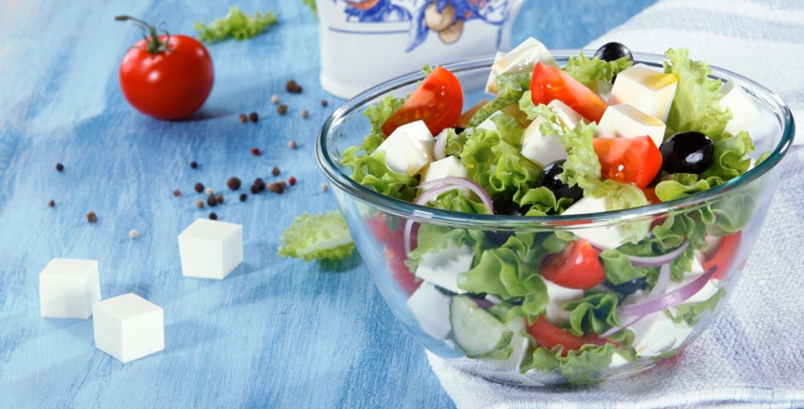
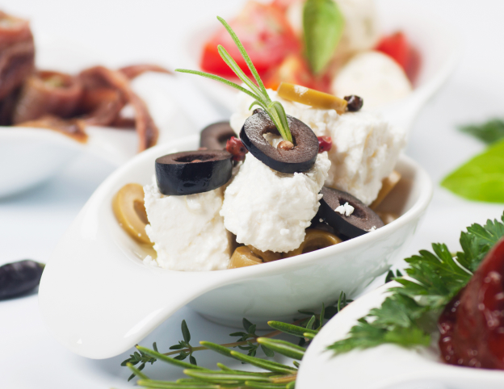
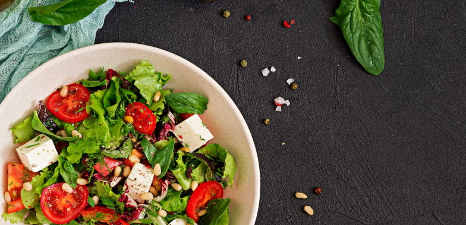
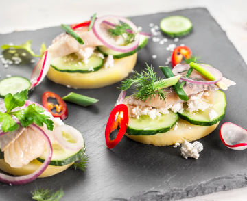
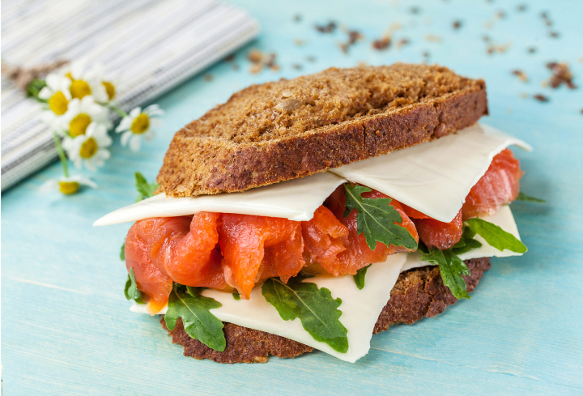

фетакса

2007
год
Фетакса в России
Бренд «Фетакса» появился в России в 2007 году и с того времени не перестает радовать хозяек своими новинками, с которыми можно легко и быстро приготовить множество блюд.

2008
год
Обновление классики
Основным преимуществом «Фетаксы» является особенная плотная консистенция, благодаря которой продукт легко режется, не крошится и прекрасно держит форму.

2010
год
яркий греческих вкус
Для любителей ярких греческих вкусов в ассортименте этой линейки появилась «Фетакса с маслинами и паприкой». «Фетакса» с плотной консистенцией прекрасно подходит для приготовления салатов – помимо исключительного вкуса, блюдо всегда будет очень красиво, эстетично выглядеть и радовать хозяйку, её близких и гостей.

2012
год
Классика в рассоле
У Фетаксы «Классической в рассоле» другая, невероятно нежная, консистенция, поэтому этот сыр очень легко размять. «Фетаксу в рассоле» удобно использовать в качестве мягкой начинки в горячих и холодных блюдах, например, в пирогах, что значительно облегчает их приготовление, поскольку хозяйке не надо тереть продукт на тёрке.
Кроме того, Фетакса «Классическая в рассоле» прекрасно подходит для создания лёгких закусок – с хлебом, а также с кусочком огурца или помидора.Удобная упаковка – ванночка «Фетаксы» и Фетаксы «Классической в рассоле» – позволяет легко извлекать и хранить продукт.

2017
год
Ломтики Фетаксы
В 2017 году в Бренде появилась новинка – «Ломтики Фетаксы». Это первый продукт на рынке феты в России, который удобно взять с собой, так как ломтики уже порезаны и каждый упакован в индивидуальный пакетик. Также «Ломтики Фетаксы» отлично подходят для перекуса дома.
2020
год
Ломтики Фетаксы
С любой «Фетаксой» можно приготовить множество блюд, так как она прекрасно сочетается со свежими овощами, зеленью, мясом или рыбой, делая блюда вкусными, а ежедневное меню – разнообразным. Поэтому даже в большой семье хозяйке и маме будет легко угодить близким и порадовать их вкусненьким с «Фетаксой», не затрачивая на это много сил и времени.